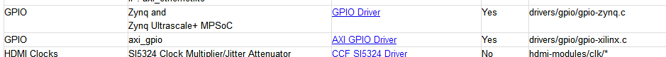
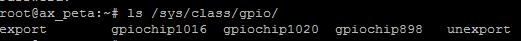
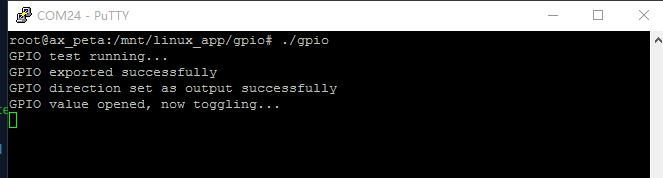

Linux下GPIO实验#
前面的教程介绍如何使用Vitis编写一个zynq版本的helloworld实验，本实验介绍如何控制zynq端外设，实验使用GPIO来举例，ZYNQ的GPIO可以分为2种，一种是PS端自带的GPIO，一种是使用PL实现的GPIO，在建立Vivado工程时添加了Xilinx的GPIO IP，大部分Xilinx提供的IP核在Linux下都已经有驱动，而且很多默认配置都是可以用的，像AXI GPIO驱动不需要在内核中再配置就可以使用。
在http://www.wiki.xilinx.com/Linux+Drivers 页面我们可以找到所有Linux下Xilinx的驱动，例如GPIO驱动如下图所示，有些驱动给出了详细的用法。
在GPIO驱动详细页面http://www.wiki.xilinx.com/Linux%20GPIO%20Driver 中介绍了GPIO驱动使用范围，设备树范例，以及如何写程序。
使用SHELL控制#
Linux提供了强大的SHELL功能，也是学习Linux必须掌握的技能，对于不熟悉Linux的命令和SHELL是令人头疼的，但是为了更好地学习ZYNQ，必须熟悉掌握SHELL，本教程不会去详细讲解Linux和SHELL的使用。
通过 ls /sys/class/gpio命令可以查看GPIO编号
gpio_test.sh文件内容如下，gpio_test函数会根据参数来export一个GPIO，然后一个for循环3次，每次先写0再写1，调用了5次gpio_test，依次点亮5个LED，其中898是PS端的，其他是PL端的，（下一节中介绍如何确定GPIO的这个编号）。
#!/bin/sh gpio_test() { gpio=$1 echo $gpio > /sys/class/gpio/export echo out > /sys/class/gpio/gpio${gpio}/direction for i in $(seq 1 3) do echo 0 >/sys/class/gpio/gpio${gpio}/value sleep 1 echo 1 >/sys/class/gpio/gpio${gpio}/value sleep 1 done echo $gpio > /sys/class/gpio/unexport } gpio_test 898 gpio_test 1016 gpio_test 1017 gpio_test 1018 |
我们可以通过挂载NFS来运行这个SHELL。
如果SHELL不能运行，可以先添加运行权限，命令如下：
chmod +x gpio_test.sh |

使用C语言控制#
大部分情况我们都需要使用C语言来控制外设，在Xilinx的wiki页面http://www.wiki.xilinx.com/GPIO%20User%20Space%20App 我们找到一段GPIO测试代码，代码内容如下：
#include <stdio.h> #include <stdlib.h> #include <fcntl.h> // The specific GPIO being used must be setup and replaced thru // this code. The GPIO of 898 is in the path of most the sys dirs // and in the export write. // // Figuring out the exact GPIO was not totally obvious when there // were multiple GPIOs in the system. One way to do is to go into // the gpiochips in /sys/class/gpio and view the label as it should // reflect the address of the GPIO in the system. The name of the // the chip appears to be the 1st GPIO of the controller. // // The export causes the gpio898 dir to appear in /sys/class/gpio. // Then the direction and value can be changed by writing to them. // The performance of this is pretty good, using a nfs mount, // running on open source linux, // the GPIO can be toggled about every 1sec. // The following commands from the console setup the GPIO to be // exported, set the direction of it to an output and write a 1 // to the GPIO. // // bash> echo 898 > /sys/class/gpio/export // bash> echo out > /sys/class/gpio/gpio898/direction // bash> echo 1 > /sys/class/gpio/gpio898/value // if sysfs is not mounted on your system, the you need to mount it // bash> mount -t sysfs sysfs /sys // the following bash script to toggle the gpio is also handy for // testing // // while [ 1 ]; do // echo 1 > /sys/class/gpio/gpio898/value // echo 0 > /sys/class/gpio/gpio898/value // done // to compile this, use the following command // gcc gpio.c -o gpio // The kernel needs the following configuration to make this work. // // CONFIG_GPIO_SYSFS=y // CONFIG_SYSFS=y // CONFIG_EXPERIMENTAL=y // CONFIG_GPIO_XILINX=y int main() { int valuefd, exportfd, directionfd; printf(“GPIO test running…\n”); // The GPIO has to be exported to be able to see it // in sysfs exportfd = open(“/sys/class/gpio/export”, O_WRONLY); if (exportfd < 0) { printf(“Cannot open GPIO to export it\n”); exit(1); } write(exportfd, “898”, 4); close(exportfd); printf(“GPIO exported successfully\n”); // Update the direction of the GPIO to be an output directionfd = open(“/sys/class/gpio/gpio898/direction”, O_RDWR); if (directionfd < 0) { printf(“Cannot open GPIO direction it\n”); exit(1); } write(directionfd, “out”, 4); close(directionfd); printf(“GPIO direction set as output successfully\n”); // Get the GPIO value ready to be toggled valuefd = open(“/sys/class/gpio/gpio898/value”, O_RDWR); if (valuefd < 0) { printf(“Cannot open GPIO value\n”); exit(1); } printf(“GPIO value opened, now toggling…\n”); // toggle the GPIO as fast a possible forever, a control c is needed // to stop it while (1) { write(valuefd,”1”, 2); sleep(1); write(valuefd,”0”, 2); sleep(1); } } |
这一次我们不再使用vitis来编译，源代码命名为“gpio.c”,运行下面命令编译代码
source /tools/Xilinx/Vivado/2023.1/settings64.sh arm-linux-gnueabihf-gcc gpio.c -o gpio |
编译完成以后会生成一个gpio的文件，不像在Windows，Linux下对扩展名要求不是很严格，gpio文件就是一个elf文件。
运行gpio，可以看到PS端LED不断闪烁，说明这个898就是PS端第一个LED。
如何确定GPIO的这个编号？#
通过下面命令，我们可以看到有gpiochip898 gpiochip1016 gpiochip1020，说明有三个GPIO控制器，数字是控制器GPIO基数。
ls /sys/class/gpio |

如何确定和物理GPIO的关系？#
通过下面命令，来确定GPIO1016和物理GPIO的关系，可以看到这个gpio在设备树里的节点是“gpio@41210000”，通过设备树的节点我们可以确定是哪一个物理GPIO。
cat /sys/class/gpio/gpiochip1016/label |
实验总结#
本实验重点在于如何通过Xilinx给的资料来学习ZYNQ，技术资料更新较快，只有紧跟芯片厂商提供的最新资料才能获取到最新最好的技术。后续教程中PCIe驱动、PL端以太网驱动都是Xilinx提供，这些资料都可以通过wiki获取。
如果使用一个非xilinx的IP，或者自己写的IP，那就要自己开发驱动程序，这对没做过Linux驱动的开发人员来说是一个挑战，所以我们尽可能使用Xilinx的IP来搭建系统，优点就是不用开发Linux驱动，缺点就是不够灵活，如果IP有问题或者驱动有问题，无法快速定位问题。